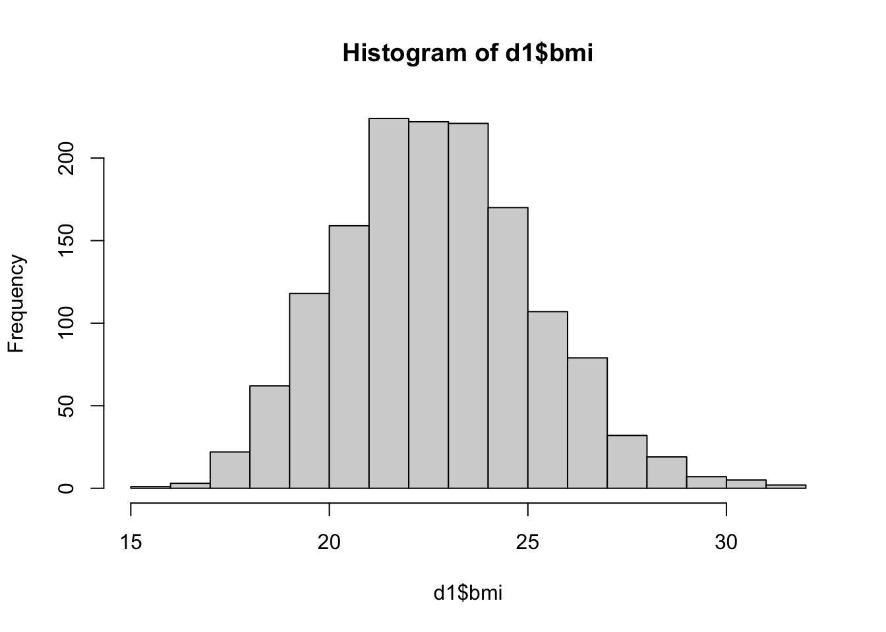
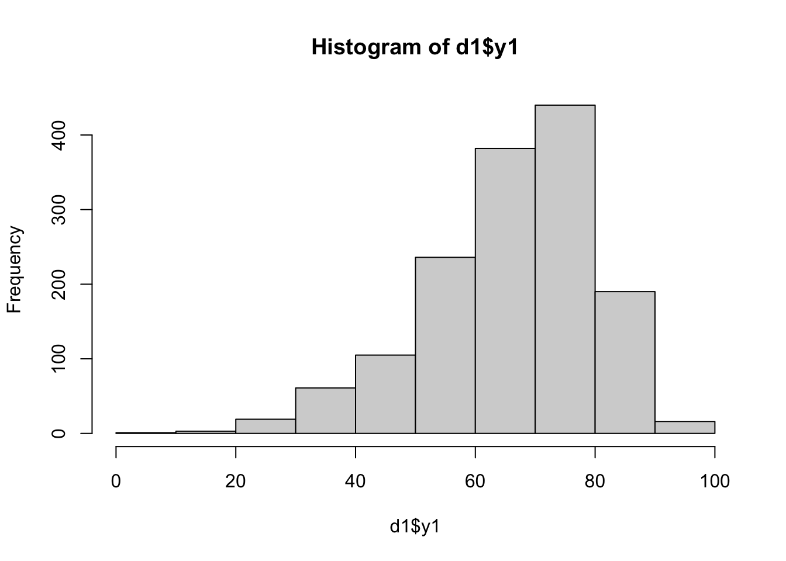
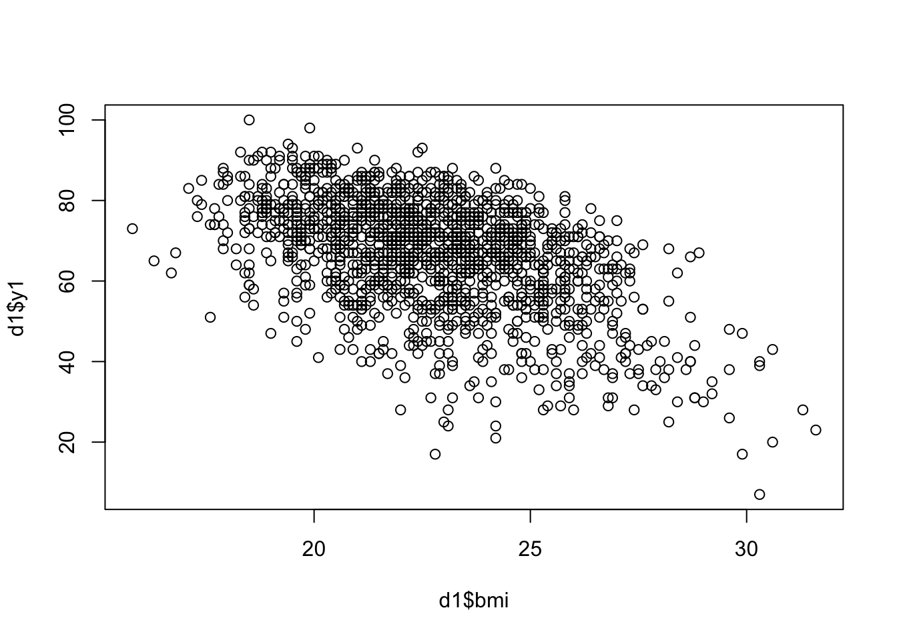
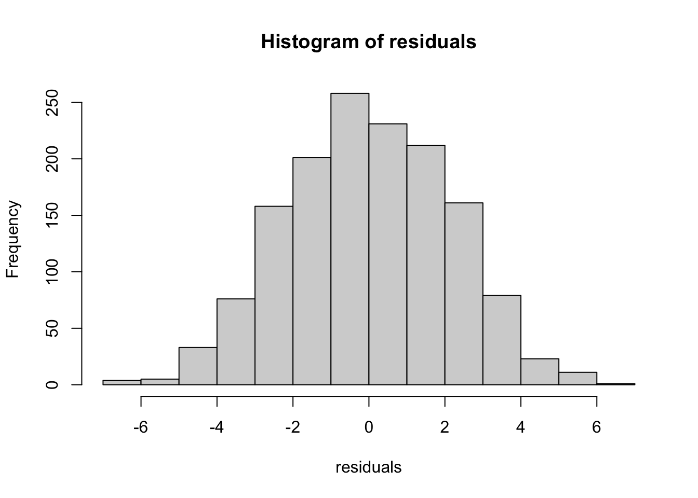
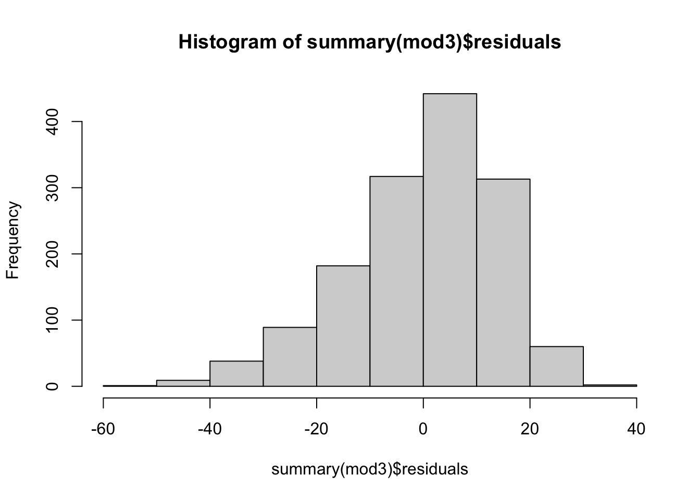
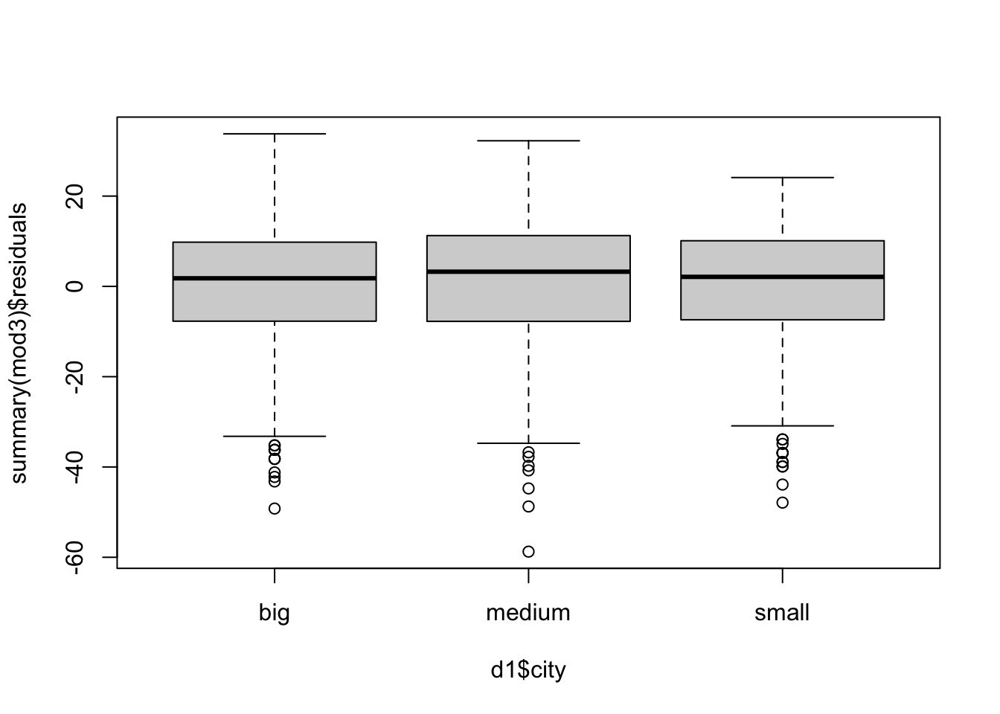

# Read in data
d1 <- read.csv(
"Biostatsweek_data1.csv",
sep = ";",
header = TRUE,
stringsAsFactors = TRUE,
dec = ","
)
# Inspect the first few rows of data
head(d1)Day 1: Linear Regression
Molecular Medicine - Oncology, Biostatistics
In these lab exercises you will get acquinted with performing a simple linear regression analysis in R. For this, we use data from \(n = 1453\) elderly people who underwent surgery for leg fractures. We recorded baseline information, and contacted them one year later, asking them to what degree they can move their broken leg recorded on a scale of 0 to 100 (y1), and if they still have pain with 0 = no and 1 = yes (y2).
You will look at three examples:
- The relationship between the movability of the broken leg (
y1) and the body mass index (bmi); - The relationship between the moveabilty of the broken leg (
y1) and the type ofcity(small, medium, or large); and - The relationship between the body mass index (
bmi) andage.
You will run multiple analyses using the lm() function. Make sure you understand the following in the summary() output of the lm() command:
- Interpretation of parameter estimates,
- Confidence intervals for parameters,
- t-values,
- p-values, and
- \(R^2\) value.
Data Description
Load the data into R using the read.csv() function:
In addition to the variables menionted above, it contains:
hosp= hospital in which they were treatedseverity= severity of the fracture (1-10)sex(m/f)edu= education (low/medium/high)smoke= smoking habits (0/1)- alcohol consumption (dl/day of alcoholic beverages)
milk= milk consumption (dl/day)- the existance of comorbidities (
ost= osteoporosis;cvd;cancer;diab= diabetes) (0/1) partner= whether they have a partner (0/1)city= whether they live in a small/medium/big town
Assumptions
Always, before running analyses, it is important to get a “aquinted with”/“get a feeling for” the data. Answer the below questions to check whether assumptions for linear regression hold.
Question 1
Make histograms of bmi and y1. Based on the histograms, are there any signs that a linear regression model with y1 as outcome and bmi as independent variable is not suitable?
NoteAnswer
Looking at histograms like this is not a good way of seeing if linear regression is suitable. Still, no obvious warning signs (e.g., no obvious indications that there are non-linear associations).
# Visualize distribution of bmi using a histogram
hist(d1$bmi)
# Visualize distribution of y1 using a histogram
hist(d1$y1)
Question 2
Create a scatterplot of bmi and y1. Does it look like a linear regression model is suitable for this data?
NoteAnswer
Looks like we have a negative and approximately linear association, so a linear regression model would be fine.
# Visualize relationship between bmi and y1 using a scatterplot
plot(d1$bmi, d1$y1)
The assumption of equal variances can best be checked after the model is fitted, and inspecting the residuals.
Moveability and Body Mass Index
Fit a linear regression model which says that the mean bmi depends on y1 using the lm() function. That is, we try to predict bmi from the movability of the broken leg (y1).1 Use the summary() function to get more information about the model. Look at the different sections (and their headers) in the output. Then, interpret the results.
Question 3
Explain how the \(t\)-value for the parameter of y1 is calculated and how the \(t\) value can be used to calculate the \(p\)-value. Run confint() and explain how the output of the summary() function can be used to calculate the confidence intervals.
TipTip
See slide 27 from the lecture.
NoteAnswer
First, y1 has a slight negative effect on the expected bmi. The result is statistically significant (the p-value is less than our significance level of 0.05).
# Fit a linear regression model
mod1 <- lm(bmi ~ y1, data = d1)
# Print a summary of the results
summary(mod1)
Call:
lm(formula = bmi ~ y1, data = d1)
Residuals:
Min 1Q Median 3Q Max
-6.5834 -1.5300 -0.0201 1.5700 6.1921
Coefficients:
Estimate Std. Error t value Pr(>|t|)
(Intercept) 28.589424 0.274582 104.12 <2e-16 ***
y1 -0.087784 0.004044 -21.71 <2e-16 ***
---
Signif. codes: 0 '***' 0.001 '**' 0.01 '*' 0.05 '.' 0.1 ' ' 1
Residual standard error: 2.144 on 1451 degrees of freedom
Multiple R-squared: 0.2451, Adjusted R-squared: 0.2446
F-statistic: 471.2 on 1 and 1451 DF, p-value: < 2.2e-16Second, the \(t\)-value is the estimate divided by its standard error; the \(p\)-value is obtained from the \(t\)-distribution with n - 2 degrees of freedom.
# Save the summary output
s1 <- summary(mod1)
# Print the summary output
s1
# Get the estimate of the parameter of y1
est_y1 <- s1$coefficients[2, 1]
# Get the standard error of the parameter of y1
se_y1 <- s1$coefficients[2, 2]
# Calculate the t-value
t_y1 <- est_y1 / se_y1
t_y1
# Calculate the p-value
p_y1 <- 2 * pt(abs(t_y1), nrow(d1) - 2, lower.tail = FALSE)
p_y1Third, confidence intervals are build using both the estimate and its uncertainty. It is computed as estimate ± (standard error × critical t-value).
# Manually compute the 95% confidence interval using summary output
s1$coefficients[1, 1] - s1$coefficients[1, 2] * qt(0.975, nrow(d1) - 2)
s1$coefficients[1, 1] + s1$coefficients[1, 2] * qt(0.975, nrow(d1) - 2)
# Manually compute the 95% confidence interval using the printed numbers (which also come from summary output)
28.58942389 - 0.274581637 * qt(0.975, nrow(d1) - 2)
28.58942389 + 0.274581637 * qt(0.975, nrow(d1) - 2)
# Shortcut method in R
confint(lm(bmi ~ y1, data = d1))Question 4
Calculate the correlation between bmi and y1. Is it consistent with the result from Question 3? Why? How?
NoteAnswer
The correlation has the same sign as the coefficient. The parameter estimate can be written as a function of the correlation and standard deviations:
\[ \beta_1 = \frac{Cor(X, Y)}{\sqrt{Var(X) \cdot Var(Y)}} \]
# Calculate the correlation between bmi and y1
cor(d1$bmi, d1$y1)
# Compute the regression coefficient using the correlation and standard deviations
beta1 <- cor(d1$bmi, d1$y1) * sd(d1$bmi) / sd(d1$y1)
beta1Question 5
Plot a histogram of the residuals from the regression model in Question 3. Does the distribution of the residuals seem approximately normal? Why does it (not) matter?
NoteAnswer
Looks approximately normal, but thanks to the central limit theorem the distribution of our residuals is not very important for us, as long as the sample size is large enough.
# Obtain residuals from summary output
residuals <- s1$residuals
# Plot a histogram of the residuals
hist(residuals)
Question 6
Now run the same analysis as in Question 3 but now treat mean y1 as the outcome and bmi as the regressor (independent variable). That is, we ask the question whether the movability of the broken leg (y1) can be predicted by the body mass index (bmi) of a patient. Interpret the parameter estimates.
NoteAnswer
There is a negative association between y1 and bmi: The expected y1 goes down by 2.79 per unit increase in bmi.
mod2 <- lm(y1 ~ bmi, data = d1)
summary(mod2)
Call:
lm(formula = y1 ~ bmi, data = d1)
Residuals:
Min 1Q Median 3Q Max
-49.333 -7.306 1.614 8.965 25.829
Coefficients:
Estimate Std. Error t value Pr(>|t|)
(Intercept) 130.0003 2.9445 44.15 <2e-16 ***
bmi -2.7924 0.1286 -21.71 <2e-16 ***
---
Signif. codes: 0 '***' 0.001 '**' 0.01 '*' 0.05 '.' 0.1 ' ' 1
Residual standard error: 12.09 on 1451 degrees of freedom
Multiple R-squared: 0.2451, Adjusted R-squared: 0.2446
F-statistic: 471.2 on 1 and 1451 DF, p-value: < 2.2e-16Question 7
Use the model from Question 7 to estimate the expected y1 of people with the following bmi: 5, 25 and 40. Are there reasons to be skeptical of any of these estimates?
NoteAnswer
Yes, we extrapolate a lot with bmi = 5 and 40, and the estimates are unreasonable, in particular for bmi = 5. In other words, the data do not contain information about bmi values of 5 or 40. Hence, predictions for these values are not trustworthy.
# Get the coefficients from the model
b1hat <- mod2$coefficients[1]
b2hat <- mod2$coefficients[2]
# Compute the expected y1 for different bmi values
b1hat + b2hat * 5
b1hat + b2hat * 25
b1hat + b2hat * 40
# As a shortcut, we can fill in a formula with multiple predictor values at once
b1hat + b2hat * c(5, 25, 40)
# Alternatively, we can use the predict() function
predict(mod2, newdata = data.frame(bmi = c(5, 25, 40)))City and Moveability
Next, we might want to know if there are differences between cities in terms of the movability of the broken leg (y1) of patients. First, graphically illustrate the difference in y1 distribution between people from big, medium and small cities. Then, fit a linear regression model which in which the mean y1 depends on the city variable.
TipTip
Think about what kind of variable the city variable is (categorical or continuous). How does this change the analysis?
Question 8
What is the difference in expected mean y1 between people from small and medium cities according to the model?
NoteAnswer
The city variable is categorical, containing three levels: Big, medium and small. Hence, fitting a linear regression model with city as a predictor requires the use of a dummy variable. Luckily, the lm() function in R can handle this automatically when we indicate that the city variable is a factor. For this, we can use the factor() function.
# Graphically illustrate the difference in y1 distribution between people from big, medium and small cities
boxplot(d1$y1 ~ d1$city)# Visually, the differeces are not very large.
# Fit a linear regression model with city as a predictor
mod3 <- lm(y1 ~ factor(city), data = d1)
summary(mod3)Once you have the coefficients, you can compute the difference in expected mean y1 between people from small and medium cities. For this, it is easiest to write down the full regression equation, and then fill it in for the two city types.
\[ \begin{aligned} \mathbb{E}[y1 | city] &= \beta_0 + \beta_1 \cdot Medium + \beta_2 \cdot Small\\ \\ \mathbb{E}[y1 | city = \text{small}] &= \beta_0 + \beta_1 \cdot 0 + \beta_2 \cdot 1 \\ \mathbb{E}[y1 | city = \text{medium}] &= \beta_0 + \beta_1 \cdot 1 + \beta_2 \cdot 0 \\ \mathbb{E}[y1 | city = \text{big}] &= \beta_0 + \beta_1 \cdot 0 + \beta_2 \cdot 0 \\ \end{aligned} \] Then, filling in the estimated coefficients in the equation for small and medium cities, we get:
# Small cities
y1_hat_small <- mod3$coefficients[1] + mod3$coefficients[2] * 0 + mod3$coefficients[3] * 1
y1_hat_small(Intercept)
67.89298 # Medium cities
y1_hat_medium <- mod3$coefficients[1] + mod3$coefficients[2] * 1 + mod3$coefficients[3] * 0
y1_hat_medium(Intercept)
65.74919 # Difference is
y1_hat_medium - y1_hat_small(Intercept)
-2.143791 Question 9
Do the residuals from the model in Question 8 look normally distributed? Is there a relationship between the residuals and the city variable?
NoteAnswer
Residuals look slightly negatively skewed, but this is not a big problem given the large sample size (central limit theorem). The distribution of the residuals seems to be the same across all city types (assumption of equal variances across level of the predictor variable).
hist(summary(mod3)$residuals)
boxplot(summary(mod3)$residuals ~ d1$city)
Question 10
Test the hypothesis that the mean y1 is the same for people from big, medium and small cities. How do you write down such a hypothesis? Are there any reasons not to trust the test result?
NoteAnswer
The hypothesis is that the mean y1 is the same for people from big, medium and small cities. We can write this down as: \[
H_0: \mu_{small} = \mu_{medium} = \mu_{big}
\] \[
H_a: \mu_{small} \neq \mu_{medium} \neq \mu_{big}
\]
To test this hypothesis with one single test, we can use an ANOVA test, rather than comparing the means of the three city types pairwise using t-tests. An ANOVA can be run in R using the aov() function.
# Run an ANOVA test
aov_test <- aov(y1 ~ city, data = d1)
# Print the summary of the ANOVA test
summary(aov_test)The p-value is 0.119, so we do not reject the null hypothesis. In other words, we do not have evidence to suggest that the mean y1 is different for people from big, medium and small cities. This conclusion corresponds with our visualization of the data.
Body Mass Index and Age
Fit a linear regression model which explains how mean bmi depends on age.
Question 11
Interpret the result and argue whether or not we should trust the model.
NoteAnswer
With a term such as “trust the model”, we refer to wheter or not the assumptions underlying an analysis are met. We can test the assumption of linearity with a scatterplot of the raw data, and the assumption of equal variances with a boxplot of the residuals. The assumption of independence of observations is not necessarily testable with data, and must be reasoned about based on the study design.
The expected bmi for a person of age = 0 is 23.5, but this is a nonsensical estimate. Age hardly seems to matter for bmi: An increase in age by 1 year is associated with a decrease in expected bmi by 0.01201, which is not significantly different from 0, \(p = .369\). The model seems trustworthy based on the visualizations.
# Fit a linear regression model
mod4 <- lm(d1$bmi ~ d1$age)
# Print the summary of the model
summary(mod4)
# Visualize the relationship between bmi and age using a scatterplot
plot(d1$bmi ~ d1$age)
# Plot the fitted line through the data
abline(mod4$coef, col = "red")# A straight (linear) line appears to fit the data well
# Visualize the relationship between age and residuals using a scatterplot
plot(d1$age, residuals(mod4))# The residuals are equally scattered around across the range of age, indicating that the assumption of equal variances is met.Cancer and Body Mass Index
Fit a linear regression model which explains how mean bmi depends on cancer status.
Question 12
Interpret the result and argue whether or not we should trust the model. Also test the hypothesis that cancer patients have the same mean bmi as non-cancer patients.
NoteAnswer
According to the model, cancer patients have a slightly higher expected bmi (0.23 higher than non-cancer patients). But the difference in mean values is not statistically significant on any standard significance level, as \(p = .21\). This result is not surprising based on the visualizations of the data. The model looks trustworthy based on visualization of data/residuals.
To test the hypothesis that the means are equal, it would be enough to look at the p-value for the cancer parameter in our model, but we can also perform a t-test to reach the same conclusion.
# Visualize the relationship between bmi and cancer status using a boxplot
boxplot(d1$bmi ~ d1$cancer)# Fit a linear regression model with cancer status as a predictor
mod5 <- lm(bmi ~ factor(cancer), data = d1)
summary(mod5)
# Visualize the relationship between cancer status and residuals using a boxplot
boxplot(residuals(mod5) ~ factor(d1$cancer))# Perform a t-test to test the hypothesis that cancer patients have the same mean `bmi` as non-cancer patients
t.test(d1$bmi ~ factor(d1$cancer))Footnotes
Whether or not this is a sensible question to ask/sensible model to fit is a different matter.↩︎